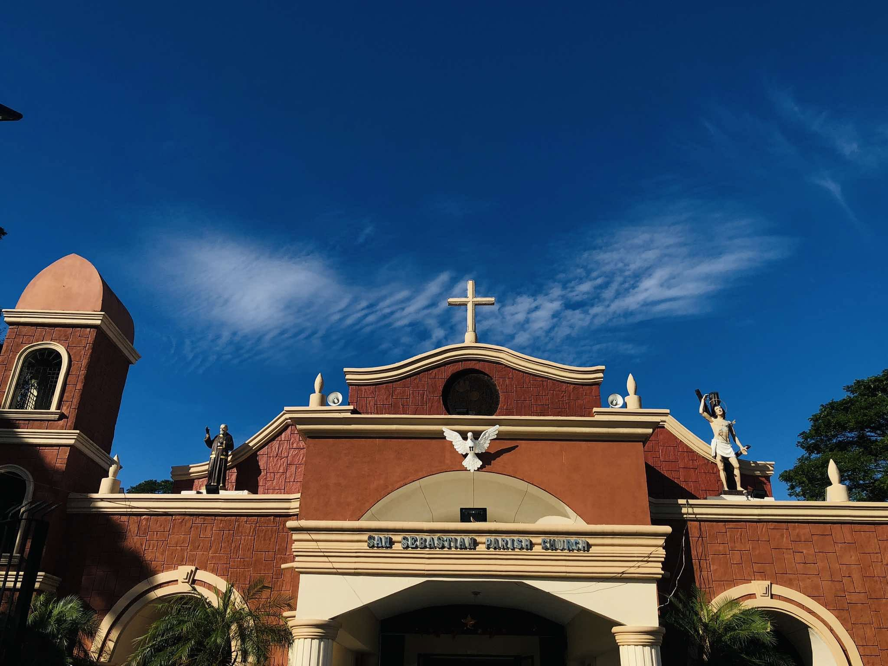
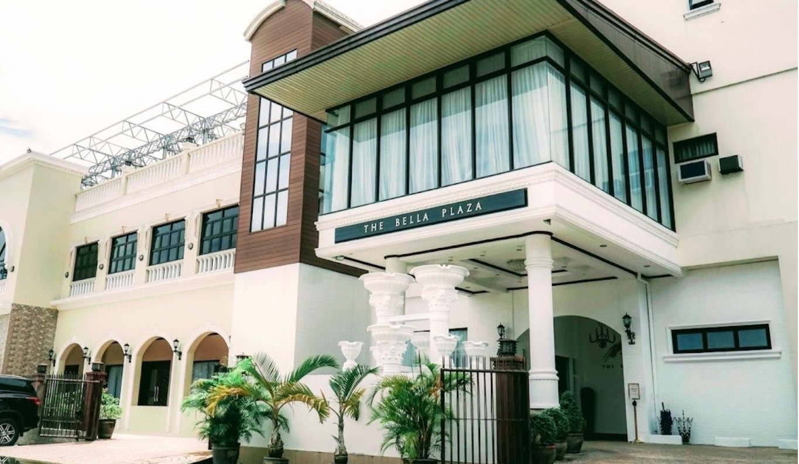
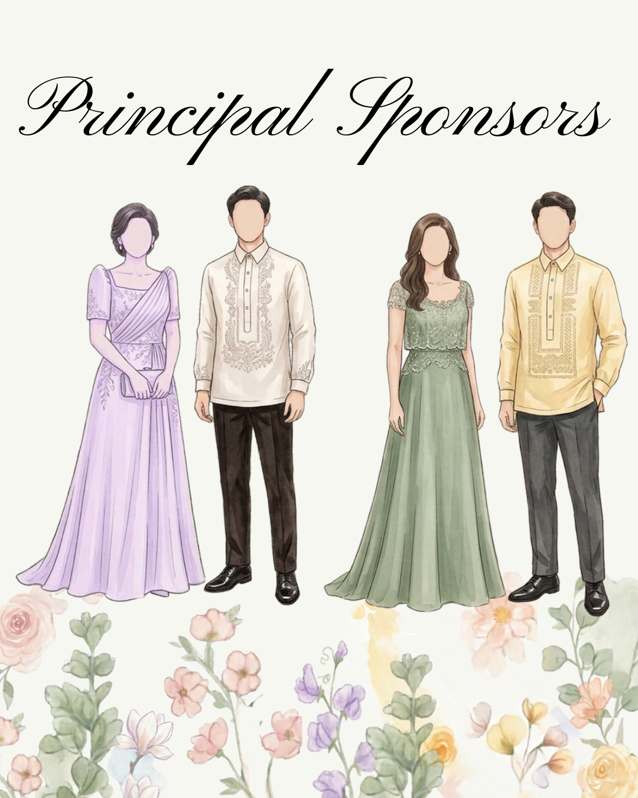
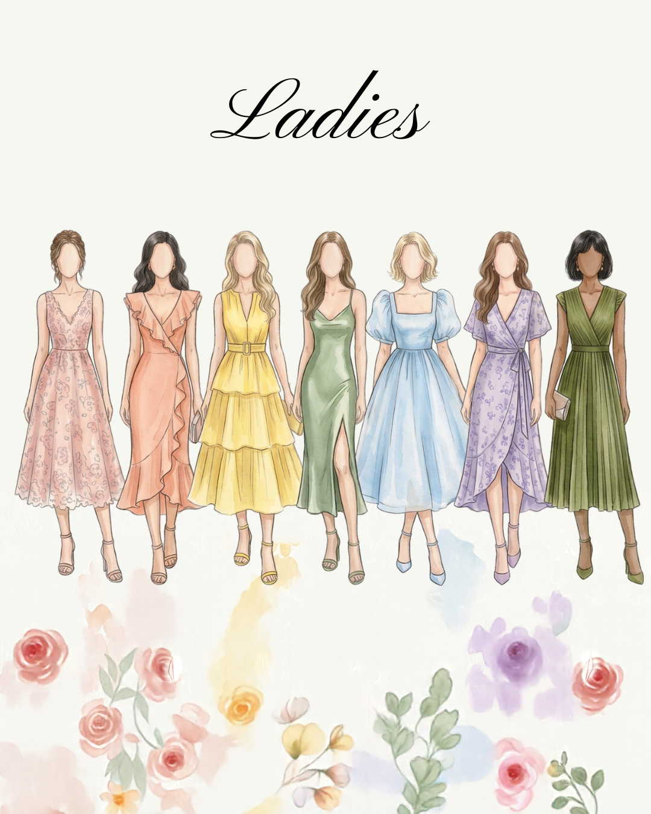
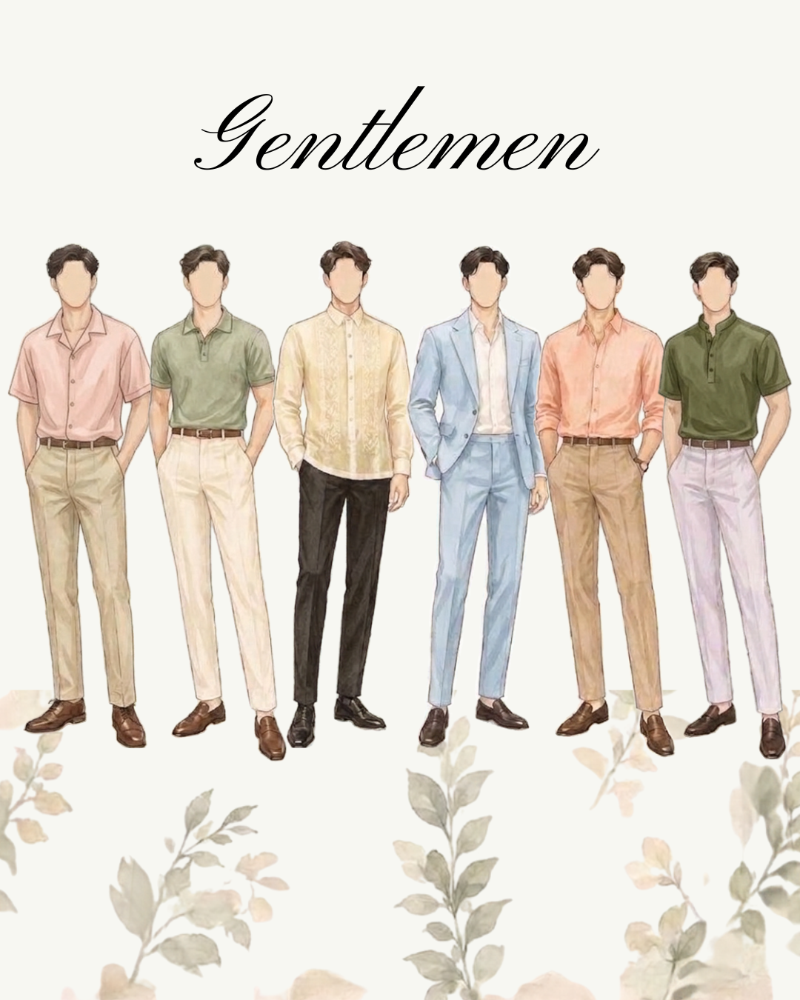
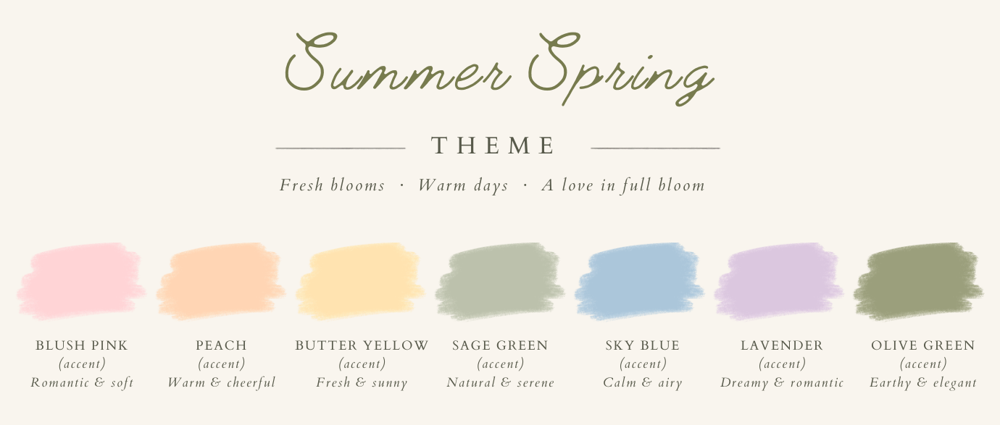

THE CEREMONYSan Sebastian Parish Church
San Sebastian Village Parish
Tarlac, 2300
TIME 3:00 PM
VIEW ON GOOGLE MAPS ↗Two lives, two hearts, joined together in friendship, united forever in love.
MARCH 06, 2027
CELEBRATE WITH USEvery second brings us closer to forever.
And somehow, it became forever. Read the story of how two hearts found their way to each other.

Sometimes, the most beautiful stories begin in the simplest ways. One conversation turned into countless memories, laughter, dreams, and a love we never want to stop choosing.
Now, we are ready to begin our next chapter, surrounded by the people who have been part of our journey.
Two special places, one unforgettable day. We can't wait to celebrate with you.

THE CEREMONY
San Sebastian Village Parish
Tarlac, 2300
TIME 3:00 PM
VIEW ON GOOGLE MAPS ↗
THE RECEPTION
47 David Avenue, cor. Dizon St., San Sebastian Village Gate 2
Tarlac, 2300
TIME 4:30 PM
VIEW ON GOOGLE MAPS ↗Come dressed with love. Help us make the day feel as special and beautiful as the memories we'll create.

Kindly wear elegant formal attire in the suggested wedding palette. Ladies may opt for a floor-length gown or dress, while gentlemen may wear a suit or barong with dress pants.

We invite our ladies to wear a semi-formal dress, midi dress, or elegant coordinates in the wedding colors. Light, flowy fabrics and comfortable heels or dressy flats are welcome.

Gentlemen may wear a long-sleeved button-down, polo-style dress shirt, or barong paired with tailored trousers and dress shoes. A tie or blazer is optional unless specified in your invitation.

The wonderful people standing beside us as we begin this new chapter.
Kindly respond on or before January 4, 2027
Please let us know if you'll be joining us on our special day. Kindly RSVP so we can prepare a seat especially for you, with your name on it.
A FEW HELPFUL DETAILS
Everything you might need to know before joining us on our special day.
READY TO RSVP? ↗We are keeping our celebration intimate. Please refer to your invitation for the number of seats reserved for you. If you have questions, contact the couple before confirming your attendance.
We recommend arriving 30 minutes before the ceremony begins so you have time to settle in. The final ceremony time will be shared in the wedding details.
Parking information is being finalized. Please check back for details about parking availability and any nearby alternatives.
Please check your invitation for the guests included in your reservation. If you have questions about children attending, contact us before submitting your RSVP.
We invite everyone to be present and enjoy the moment. Please keep phones silent and follow the couple's instructions about photography during the ceremony. We will share our final unplugged ceremony policy before the wedding.